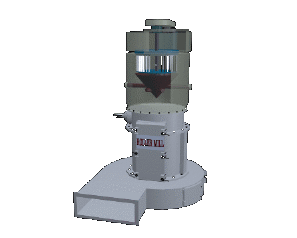

- technology -
|
. Please explore our site to help meet your fine particle processing, micronizing, fine dry grinding, air classification and other comminution requirements. The mill is available in sizes of 20 HP to 1000 HP Our Mission Continued development of fine particle processing technology. Company Profile Founded in 1992 RSG Inc manufactures dry fine grinding and air classification equipment. . |
|
. Please explore our site to help meet your fine particle processing, micronizing, fine dry grinding, air classification and other comminution requirements. The mill is available in sizes of 20 HP to 1000 HP Our Mission Continued development of fine particle processing technology. Company Profile Founded in 1992 RSG Inc manufactures dry fine grinding and air classification equipment. . |
|  |
RSG meeting reports14 November 200114 June 2001 15 March 2001 12 January 2001 document. . This included the establishment of the NERC Executive Board (NEB) and revision of the terms of reference of the Science and Technology Board (STB), which will be renamed the Science and Innovation Strategy Board (SISB). The role of the Resources and Strategy Group (RSG) will be absorbed into this new structure and so Council has approved the standing down of RSG. Council thanked RSG for its hardwork and the good advice it has provided over the years. |
RSG meeting reports14 November 200114 June 2001 15 March 2001 12 January 2001 document. . This included the establishment of the NERC Executive Board (NEB) and revision of the terms of reference of the Science and Technology Board (STB), which will be renamed the Science and Innovation Strategy Board (SISB). The role of the Resources and Strategy Group (RSG) will be absorbed into this new structure and so Council has approved the standing down of RSG. Council thanked RSG for its hardwork and the good advice it has provided over the years.
further information: http://www.bgs.ac.uk